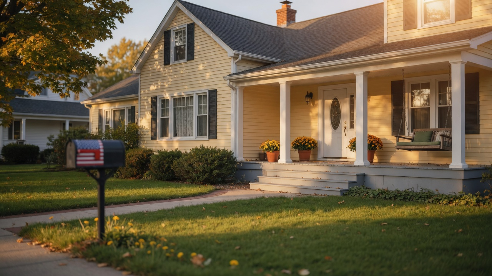
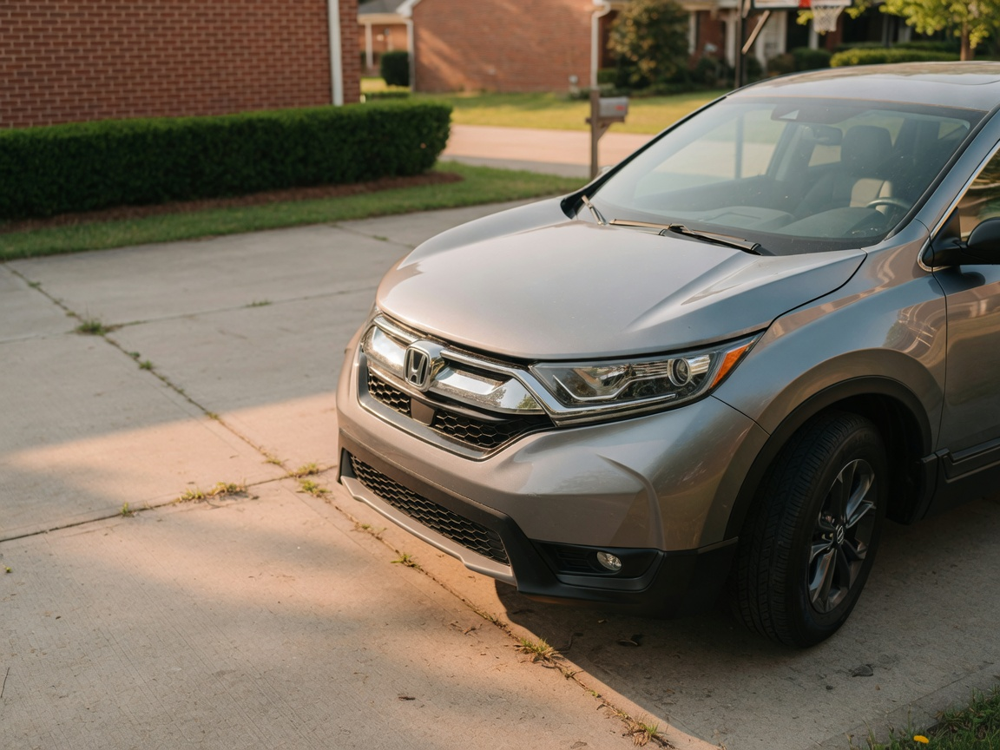
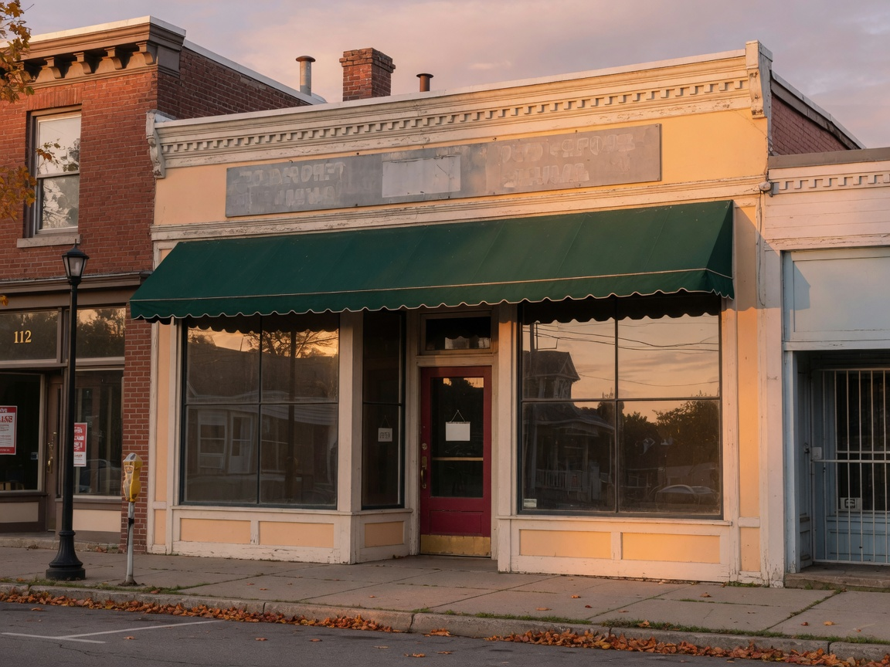

Home
Dwelling, contents, and liability.
Preview · not the live CMS
This is the spice pack at a slightly louder preview level than production (grain especially). Production stays subtler, and Theme Designer motion intensity can take it to zero.
Chosen sections get the same action on every style and every template. If a style has no photo, image-drift is a no-op. Dummy photos, dummy copy.
1 · rise
~84px up and in from the right, 50% slower (~3.6s). Type stays planted.
Who We Are · any style
The picture moves. The headline does not. Same rise on Style 1, 2, and 3.
2 · stagger
~60px up, 50% slower. Card 1 and 3 from the left, card 2 from the right.

Dwelling, contents, and liability.

Second in the sequence. Same motion on every style.

Third. Navy Style 2 staggers too.
3 · image-drift
Cover image translates about 6–10% of the well. Scrim and type stay put. HeroSignature, every template, every style that has a photo.
HeroSignature
Watch the porch drift behind the type. That is the whole effect.
4a · paper grain A · grey
Very light noise on white/muted bands, shifting ~12–20px. The approved grey paper. Odd paper bands on the live site. Never on navy/CTA fills.
Problem · Locations · FAQ · Blog · Form reassurance
Look at the field behind this type — a faint grey grain is sliding. Every light style of a chosen paper section gets this. Dark styles of the same section do not.
4b · paper grain B · primary wash
Alternates with Grain A down the page. Tenant --primary follows a rebrand; this preview uses the platform blue.
Even paper bands · Who We Are · Locations · Blog
Same motion as Grain A. Only the tint changes. Odd paper sections stay grey; even ones use this.
5 · band-gradient
135° mix, about 27–33% toward white. Toggle is per section.
Navy band
Same recipe on A, B, and C.
CTA / primary band
Orange to a lighter orange, still the tenant CTA token.